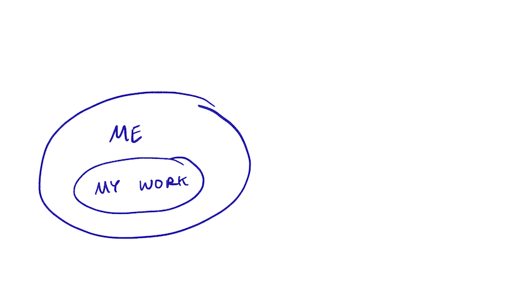
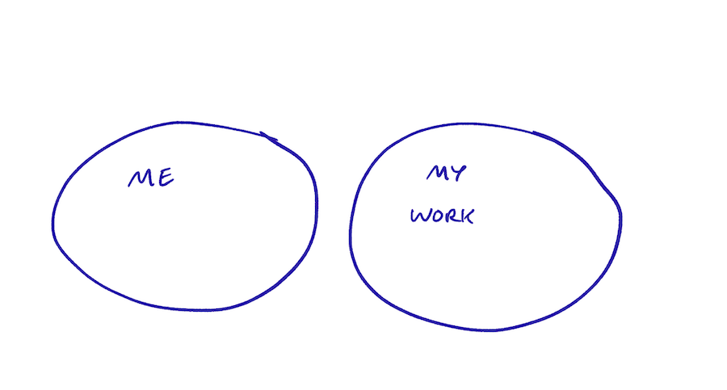

Code Review and Criticism
Separating my work from my worth
Jun 3, 2020 · 723 words · 4 minutes read
I’ve been working in software for a few years, and I’ve come to take it for granted that I am not my work. My work exists in some separate sphere, where it can easily be critiqued, dissected, refactored, or improved by me or anyone else. It’s as if it’s in a separate pond from my private one, where any ripples don’t cross the pebbly barrier to the rest of me. I’m still proud of the things I make and still take ownership over code, projects, and problems, but those things are separate from me.
This makes working with software much easier. Any comment or constructive criticism is clearly not about me; it’s about this thing I created. If it can be improved, that means there’s something to learn. If there’s something wrong with it, it means that there’s something to remember the next time around. It removes any kind of validation or personal valuation from code reviews and ensures it’s a collective effort towards solving problems and improving the codebase.
This may sound self-evident, but it wasn’t always like this for me. I remember my first proper code review pretty clearly. After learning to code mostly through solo side projects without any external input, let alone code reviews, and working a basic role doing basic dev work, also without code reviews, I ended up at a proper startup with more senior developers and a modern development process.

I remember sending out my first nontrivial code for review, then getting it back with what felt like a ton of comments. It’s funny to think back to, because now it would easily be no sweat to get a comment-heavy review, especially if it was a new codebase or a new language for me. At the time, it was a lot of sweat. I remember feeling embarrassed that there was so much wrong with it. Had I been learning wrong this whole time? Was I really qualified to be paid for this? My manager said it was a good start and was very supportive, but the imposter syndrome in the back of my head told me it didn’t matter. It felt like I had learned a word only by seeing it in writing, then I mispronounced it when trying to show that I understood the concept. This was one of the first times that I was opening up code I had written for feedback, and not being experienced with criticism of my code, it felt like it was a reflection onto me personally.
Of course, it ended up being OK. The comments were all helpful, and there was nothing personal about it. I got through that first review, and as one code review faded into ten, then dozens, then hundreds, this muscle built up over time, growing the mental separation between myself and my output.

I think putting creative work that feels like a part of yourself out there is scary at first. I’ve experienced it with having others review my code, cooking for other people, sharing a drawing I made with someone, or even writing publicly like this for anyone to read. At first it feels like it’s a part of you, and any negativity about this thing you’ve created is a direct reflection onto you. Like anything, I think practice building that barrier is important. Of course, this requires good faith on behalf of the reviewer and assumes that any feedback is constructive, if not at least correct.
This odd skill of separating your work from yourself and getting comfortable with criticism isn’t something I ever saw mentioned when I was learning to code, and I didn’t consciously think about it once I had built it up. It grew over time, like a callous on your hand you didn’t notice until you happened to think about your first blister in the same spot.
This came to mind recently as I was walking through the importance of healthy code reviews with the summer interns on our team at work, where working to foster a supportive and constructive environment reminded me of my first experiences with this odd balance. It makes me think about the other skills you build over time subconsciously, and it makes me wonder which ones I’ve forgotten I had to learn. I guess I’ll have to do my best to remember them.